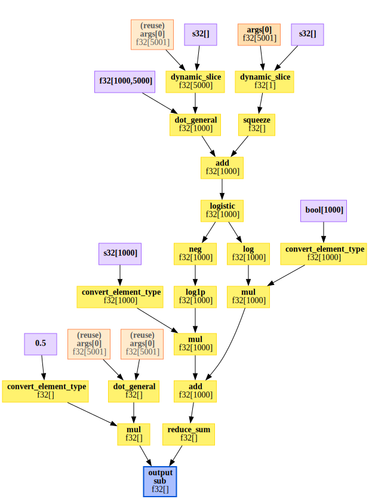
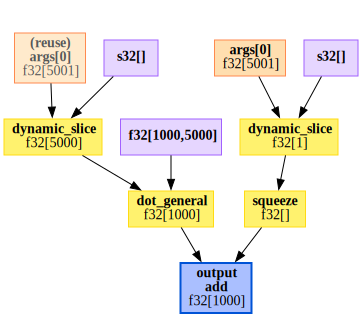
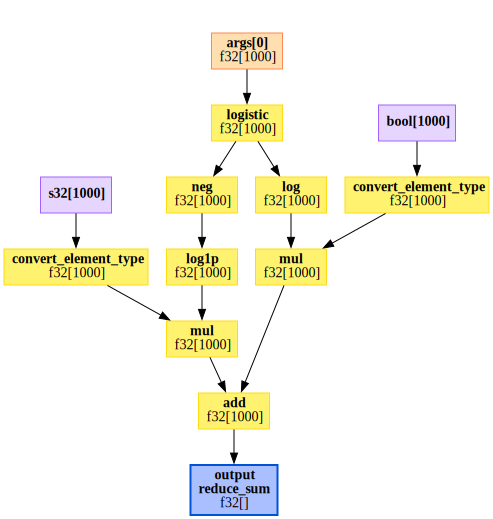
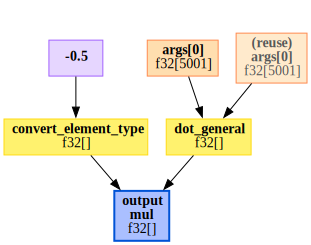
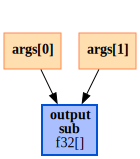

import jax.numpy as jnp
from jax.scipy.optimize import minimize
from jax.scipy.special import expit
from jax import jacfwd, grad
from jax import Array
from typing import Callable, Tuple, List
def laplace(f: Callable, x0: Array) -> Array:
nx = x0.shape[0]
mode, *details = minimize(lambda x: -f(x), x0, method = "BFGS")
H = -1.0 * jacfwd(grad(f))(mode)
return mode, HI am, once again, in a bit of a mood. And the only thing that will fix my mood is a good martini and a Laplace approximation. And I’m all out of martinis.
The Laplace approximation
One of the simplest approximations to a distribution is the Laplace approximation. It be definied as the Gaussian distribution that matches that the mode and the curvature and the curvature at the mode of the target distriution. It lives its best life when the density is of the form \[ p(x) \propto \exp(-nf_n(x)), \] where \(f_n\) is a sequence of functions1. Let’s imagine that we want to approximate the normalised density \(p(x)\) near the mode \(x^*\). We can do this by taking the second order Taylor expansion of \(f_n\) around \(x=x_0\), which is \[ f_n = f_n(x^*) + (x-x^*)^TH(x^*)(x-x^*) + \mathcal{O}((x-x^*)^3), \] where2 \[ [H(x^*)]_{ij} = \frac{\partial^2 f_n}{\partial x_i \partial x_j} \] is the Hessian matrix.
If we replace \(f_n\) by it’s quadratic approximation we get3 \[ p(x) \approx N(x^*, n^{-1}H(x^*)^{-1}). \]
The Laplace approximation can be justified rigorously and has a well-studied error and it’s known to work quite well when \(p(x)\) is a) unimodal4 and b) isn’t tooooo non-Gaussian.
In practice, people have found that Laplace approximations do a reasonable5 job quantifying uncertainty even in complex neural network models and it is at the heart of any number of classical estimators in statistics.
Also, like, it’s probably possible to make this all seem a lot more complicated, but it really isn’t. It’s just a two step process:
Find the mode \(x^* = \arg \max_x f_n(x)\)
Compute the Hessian \(H(x^*)\).
In a Bayesian context, we typically take \[ f_n(x) = \frac{1}{n} \sum_{i=1}^n \log p(y_i \mid x) + \frac{1}{n} \log p(x), \] which will lead to a Gaussian approximation to the posterior distribution.
Commputing the Laplace approximation in JAX
This is a two step process and, to be honest, all of the steps are pretty standard. So (hopefully) this will not be too tricky to implement. For simplicity, I’m not going to bother with the dividing and multiplying by \(n\), although for very large data it could be quite
There are a few things worth noting here. There’s not really much in this code, except to note that jax.scipy.optimize.minimize finds the minimum of \(f\), so I had to pass through the negative of the function. This change also propogagtes to the compuation of the Hessian, which is computed as the Jacobian of the gradient of f.
Depending on what needs to be done with the Laplace approximation, it might be more appropriate to output the log-density rather than just the mode and the Hessian, but for the moment we will keep this signature.
Let’s try it out. First of all, I’m going to generate some random data from a logistic regression model. This is going to use Jax’s slightly odd random number system where you need to manually update the state of the pseudo-random number generator. This is beautifully repeatable6 unlike, say, R or standard numpy, where you’ve got to pay a lot of attention to the state of the random number generator to avoid oddities.
from jax import random
def make_data(key, n: int, p: int) -> Tuple[Array, Array]:
key, sub = random.split(key)
X = random.normal(sub, shape = (n,p)) /jnp.sqrt(p)
key, sub = random.split(key)
beta = 0.5 * random.normal(sub, shape = (p,))
key, sub = random.split(key)
beta0 = random.normal(sub)
key, sub = random.split(key)
y = random.bernoulli(sub, expit(beta0 + X @ beta))
return (y, X)An interesting sidenote here is that I’ve generated the design matrix \(X\) to have standard Gaussian columns. This is not a benign choice as \(n\) gets big. With very high probability, the columns of \(X\) will be almost7 orthonormal, which means that this is the best possible case for logistic regression. Generally speaking, design matrices from real8 data have a great deal of colinearity in them and so algorithms that perform well on random design matrices may perform less well on real data.
Ok, so let’s fit the model! I’m just going to use \(N(0,1)\) priors on all of the \(\beta\)s.
from functools import partial
n = 100
p = 5
key = random.PRNGKey(30127)
y, X = make_data(key, n, p)
def log_posterior(beta: Array, X: Array, y: Array) -> Array:
assert beta.shape[0] == X.shape[1] + 1
prob = expit(beta[0] + X @ beta[1:])
return jnp.sum(y * jnp.log(prob) + (1-y) * jnp.log1p(-prob)) - 0.5 * jnp.dot(beta, beta)
post_mean, H = laplace(partial(log_posterior, X = X, y = y),
x0 =jnp.zeros(X.shape[1] + 1))
post_cov = jnp.linalg.inv(H)Let’s see how this performs relative to MCMC. To do that, I’m going to build and equivalent PyMC model.
import numpy as np
import pymc as pm
import pandas as pd
with pm.Model() as logistic_reg:
beta = pm.Normal('beta', 0, 1, shape = (p+1,))
linpred = beta[0] + pm.math.dot(np.array(X), beta[1:])
pm.Bernoulli("y", p = pm.math.invlogit(linpred), observed = np.array(y))
posterior = pm.sample(tune=1000, draws=1000, chains=4, cores = 1)
# I would like to apologise for the following pandas code.
tmp = pm.summary(posterior)
tmp = tmp.assign(laplace_mean = post_mean, laplace_sd = np.sqrt(np.diag(post_cov)), Variable = tmp.index)[["Variable","mean", "laplace_mean", "sd", "laplace_sd"]]
with pd.option_context('display.precision', 3):
print(tmp)
100.00% [2000/2000 00:01<00:00 Sampling chain 0, 0 divergences]
100.00% [2000/2000 00:01<00:00 Sampling chain 1, 0 divergences]
100.00% [2000/2000 00:01<00:00 Sampling chain 2, 0 divergences]
100.00% [2000/2000 00:01<00:00 Sampling chain 3, 0 divergences]
Variable mean laplace_mean sd laplace_sd
beta[0] beta[0] 0.248 0.234 0.236 0.229
beta[1] beta[1] -0.968 -0.914 0.445 0.428
beta[2] beta[2] -1.719 -1.616 0.470 0.470
beta[3] beta[3] -0.976 -0.926 0.432 0.416
beta[4] beta[4] -0.750 -0.716 0.472 0.457
beta[5] beta[5] 0.638 0.609 0.486 0.475Well that’s just dandy! Everything is pretty9 close. With 1000 observations it’s identical to within 3 decimal places.
Speeding up the computation
So that is all well and dandy. Let’s see how long it takes. I am interested in big models, so for this demonstration, I’m going to take \(p = 5000\). That said, I’m not enormously interested in seeing how this scales in \(n\) (linearly), so I’m going to keep that at the fairly unrealistic value of \(n=1000\).
import timeit
def hess_test(key, n, p):
y, X = make_data(key, n , p)
inpu = jnp.ones(p+1)
def hess():
f = partial(log_posterior, X = X, y = y)
return -1.0 * jacfwd(grad(f))(inpu)
return hess
n = 1000
p = 5000
key, sub = random.split(key)
hess = hess_test(sub, n , p)
times = timeit.repeat(hess, number = 5, repeat = 5)
print(f"Autodiff: The average time with p = {p} is {np.mean(times): .3f}(+/-{np.std(times): .3f})")Autodiff: The average time with p = 5000 is 4.106(+/- 0.456)That doesn’t seem too bad, but the thing is that I know quite a lot about logistic regression. It is, after all, logistic regression. In particular, I know that the Hessian has the form \[ H = X^T D(\beta) X, \] where \(D(\beta)\) is a diagonal \(n \times n\) matrix that has a known form.
This means that the appropriate comparision is between the speed of the autodiff Hessian and how long it takes to comput \(X^TDX\) for some diagonal matrix X.
Now you might be worried here that I didn’t explictly save \(X\) and \(y\), so the comparision might not be fair. But my friends, I have good news! All ofthat awkard key, sub = random.split(key) malarky has the singular advantage that if I pass the same key into make_data that I used for hess_test, I will get the exact same generated data! So let’s do that. For \(D\) I’m just going to pick a random matrix.
If you look at that code and say but Daniel you used the wrong multiplication operator, you can convince yourself that X * d[:, None] gives the same result as jnp.diag(d) @ X. But it will be faster. And it uses such beautiful10 broadcating rules.
y, X = make_data(key, n , p)
key, sub = random.split(key)
d = random.normal(sub, shape = (n,))
mm = lambda : X.T @ (X * d[:, None])
times = timeit.repeat(mm, number = 5, repeat = 5)
print(f"Symbolic: The average time with p = {p} is {np.mean(times): .3f}(+/-{np.std(times): .3f})")Symbolic: The average time with p = 5000 is 0.951(+/- 0.058)Oh dear. The symbolic derivative11 is a lot faster.
Speeding this up is going to take a little work. The first thing we can try is to explictly factor out the linear transformation. Instead of passing in the function \(f\), we could pass in \(g\) such that \[ f(x) = g(Ax), \] for some matrix \(A\). In our case \(g\) would have a diagonal Hessian. Let’s convince ourselves of that with a small example. As well as dropping the intercept, I’ve also dropped the prior term.
g = lambda prob: jnp.sum(y * jnp.log(prob) + (1-y) * jnp.log1p(-prob))
key, sub2 = random.split(key)
y, X = make_data(sub2, 5, 3)
b = X @ jnp.ones(3)
D = -1.0 * jacfwd(grad(g))(b)
print(np.round(D, 1))[[0.7 0. 0. 0. 0. ]
[0. 3.7 0. 0. 0. ]
[0. 0. 7.8 0. 0. ]
[0. 0. 0. 4.9 0. ]
[0. 0. 0. 0. 0.3]]Wonderfully diagonal!
def hess2(g, A, x):
#
b = A @ x
D = -1.0 * jacfwd(grad(g))(b)
H = A.T @ (A * jnp.diag(D)[:, None])
return H
y, X = make_data(sub, n, p)
g = lambda prob: jnp.sum(y * jnp.log(prob) + (1-y) * jnp.log1p(-prob))
x0 = jnp.ones(p)
h2 = lambda: hess2(g, X, x0)
times = timeit.repeat(h2, number = 5, repeat = 5)
print(f"Separated Hessian: The average time with p = {p} is {np.mean(times): .3f}(+/-{np.std(times): .3f})")Separated Hessian: The average time with p = 5000 is 1.133(+/- 0.195)Well that’s definitely better.
Now, we might be able to do even better than that if we notice that if we know that \(D\) is diagonal, then we don’t need to compute the entire Hessian, we can simply compute the Hessian-vector product \[
diag(H) = H 1 \qquad \text{iff }H\text{ is diagonal},
\] where \(1\) is the vector of ones. Just as we computed the Hessian by computing the Jacobian of the gradient, it turns out that we can compute a Hessian-vector product by computing a Jacobian-vector product jvp of the gradient. The syntax in JAX is, honestly, a little bit gross here12, but if you want to read up about how it works the docs are really nice.
This observation is going to be useful because jacfwd computes the Jacobian by computing \(n\) Jacobian-vector products. So this observation is saving us a lot of work.
from jax import jvp
def hess3(g, A, x):
#
b = A @ x
D = -1.0 * jvp(grad(g), (b,), (jnp.ones(n),))[1]
H = A.T @ (A * D[:, None])
return H
h3 = lambda: hess3(g, X, x0)
times = timeit.repeat(h3, number = 5, repeat = 5)
print(f"Compressed Hessian: The average time with p = {p} is {np.mean(times): .3f}(+/-{np.std(times): .3f})")Compressed Hessian: The average time with p = 5000 is 1.047(+/- 0.101)This is very nearly as fast as the symbolic version. There must be a way to use this.
Can we automate this? Parsing JAX expressions
So that was all lovely and shiny. But the problem is that it was very labour intensive. I had to recognise both that you could write \(f(x) = g(Ax)\) and that \(g\) would have a diagonal Hessian. That is, frankly, hard to do in general.
If I was building a system like Bambi or brms or INLA, where the model classes are relatively constrained, it’s possible to automate both of these steps by analysing the formula. But all I get is a function. So I need to work out how I can automatically parse the code for \(f\) to find \(g\) and \(A\) (if they exist) and to determine if \(g\) would have a sparse Hessian.
This is, I guess, a fairly standard task. But fuck me I hate13 this type of programming. So be prepared for some fairly janky code.
So what are our tasks. First of all we need to trace our way through the JAX code. We can do this by using the intermediate representation that JAX uses when transforming functions: the jaxprs.
A jaxpr is a transformation of the python code for evaluating a JAX function into a human-readable language that maps types primitives through the code. We can view it using the jax.make_jaxpr function.
Let’s look at the log-posterior function after partial evaluation to make it a single-input function.
from jax import make_jaxpr
lp = partial(log_posterior, X=X, y=y)
print(make_jaxpr(lp)(jnp.ones(p+1))){ lambda a:f32[1000,5000] b:bool[1000]; c:f32[5001]. let
d:f32[1] = dynamic_slice[slice_sizes=(1,)] c 0
e:f32[] = squeeze[dimensions=(0,)] d
f:f32[5000] = dynamic_slice[slice_sizes=(5000,)] c 1
g:f32[1000] = dot_general[
dimension_numbers=(((1,), (0,)), ((), ()))
precision=None
preferred_element_type=None
] a f
h:f32[1000] = add e g
i:f32[1000] = logistic h
j:f32[1000] = log i
k:f32[1000] = convert_element_type[new_dtype=float32 weak_type=False] b
l:f32[1000] = mul k j
m:i32[1000] = convert_element_type[new_dtype=int32 weak_type=True] b
n:i32[1000] = sub 1 m
o:f32[1000] = neg i
p:f32[1000] = log1p o
q:f32[1000] = convert_element_type[new_dtype=float32 weak_type=False] n
r:f32[1000] = mul q p
s:f32[1000] = add l r
t:f32[] = reduce_sum[axes=(0,)] s
u:f32[] = dot_general[
dimension_numbers=(((0,), (0,)), ((), ()))
precision=None
preferred_element_type=None
] c c
v:f32[] = mul 0.5 u
w:f32[] = sub t v
in (w,) }This can be a bit tricky to read the first time you see it, but it’s waaaay easier that X86-Assembly or the LLVM-IR. Basicaly it says that to compute lp(jnp.ones(p+1)) you need to run through this program. The first line gives the inputs (with types and shapes). Then after the let statemnt, there are a the commands that need to be executed in order. A single execution looks like
d:f32[1] = dynamic_slice[slice_sizes=(1,)] c 0This can be read as _take a slice of vector c starting at 0 of shape (1,) and store it in d, which is a 1-dimensional 32bit float array. (The line after turns it into a scalar.)
All of the other lines can be read similarly. A good trick, if you don’t recognise the primitive14, is to look it up in the jax.lax submodule.
Even a cursory read of this suggests that we could probably save a couple of tedious operations by passing in an integer y, rather than a boolean y, but hey. That really shouldn’t cost much.
While the jaxpr is lovely, it’s a whole lot easier to reason about if you see it graphically. We can plot the expression graph using15 the haiku package from DeepMind.
from haiku.experimental import to_dot
import graphviz
import re
f = partial(log_posterior, X = X, y = y)
dot = to_dot(f)(jnp.ones(p+1))
#Strip out an obnoxious autogen title
dot = re.sub("<<.*>>;","\" \"", dot, count = 1, flags=re.DOTALL)
graphviz.Source(dot)
To understand this graph, the orange-y boxes represent the input for lp. In this case it’s an array of floating point digets with \(p+1 = 5001\). The purple boxes are constants that are used in the function. Some of these are signed integers (s32), there’s a matrix (f32[1000, 5000]), and there is even a literal (0.5). The blue box is the output. That leaves the yellow boxes, which have all of the operations, with inward arrows indicating the inputs and outward arrows indicating the outputs.
Looking at the graph, we can split it into three sub-graphs. The first sub-graph can be found by tracing an input value through the graph until it hits either a non-linear operation or the end of the graph. The sub-graph is created by making the penultimate node in that sequence an output node. This subgraph represents a linear transformations.

Once we have reached the end of the linear portion, we can link the output from this operation to the input of the non-linear subgraph.

Finally, we have one more trace of \(\beta\) through the graph that is non-linear. We could couple this into the non-linear graph at the cost of having to reason about a bivariate Hessian (which will become complex).

The two non-linear portions of the graph are merged through a trivial linear combination.

So we need to trace through these jaxprs and keep a record of which of the sub-graphs they are in (and we do not know how many subgraphs there will be!). We also need to note if an operation is linear or not. This is not something that is automatically provided. We need to store this information ourselves.
The only way I can think to do this is to make a set of all of the jax operations that I know to be linear. Many of them are just index or type stuff. Unfortunately, there is a more complex class of operation, which are only sometimes linear.
The first example we see of this is
g:f32[1000] = dot_general[
dimension_numbers=(((1,), (0,)), ((), ()))
precision=None
preferred_element_type=None
] a fThis line represents the general tensor dot product between a and f. In this case, a is constant input (the matrix \(X\)) while f is a linear transformation of the input (beta[1:]), so the resulting step is linear. However, there is a second dot_general in the code, which occurs at
u:f32[] = dot_general[
dimension_numbers=(((0,), (0,)), ((), ()))
precision=None
preferred_element_type=None
] c cIn this case, c is a linear transformation of the input (it’s just beta), but dot(c,c) is a quadratic function. Hence in this case, dot_general is not linear.
We are going to need to work out how to handle this case. In the folded code is a partial16 list of the jax.lax primitives that are linear or occasionally linear. All in all there are 69 linear or no-op primatives and 7 sometimes linear primitives.
jax.lax linear and sometimes linear primitives
jax_linear = {
'add',
'bitcast_convert_type',
'broadcast',
'broadcast_in_dim',
'broadcast_shapes',
'broadcast_to_rank',
'clz',
'collapse',
'complex',
'concatenate',
'conj',
'convert_element_type',
'dtype',
'dtypes',
'dynamic_slice',
'expand_dims',
'full',
'full_like',
'imag',
'neg',
'pad',
'padtype_to_pads',
'real',
'reduce',
'reshape',
'rev',
'rng_bit_generator',
'rng_uniform',
'select',
'select_n',
'squeeze',
'sub',
'transpose',
'zeros_like_array',
'GatherDimensionNumbers',
'GatherScatterMode',
'ScatterDimensionNumbers',
'dynamic_index_in_dim',
'dynamic_slice',
'dynamic_slice_in_dim',
'dynamic_update_index_in_dim',
'dynamic_update_slice',
'dynamic_update_slice_in_dim',
'gather',
'index_in_dim',
'index_take',
'reduce_sum',
'scatter',
'scatter_add',
'slice',
'slice_in_dim',
'conv',
'conv_dimension_numbers',
'conv_general_dilated',
'conv_general_permutations',
'conv_general_shape_tuple',
'conv_shape_tuple',
'conv_transpose',
'conv_transpose_shape_tuple',
'conv_with_general_padding',
'cumsum',
'fft',
'all_gather',
'all_to_all',
'axis_index',
'ppermute',
'pshuffle',
'psum',
'psum_scatter',
'pswapaxes',
'xeinsum'
}
jax_sometimes_linear = {
'batch_matmul',
'dot',
'dot_general',
'mul'
}
jax_first_linear = {
'div'
}
jax_last_linear = {
'custom_linear_solve',
'triangular_solve',
'tridiagonal_solve'
}All of the sometimes linear operations are linear as long as only one of their arguments depends on the function inputs. For both div and the various linear solves, the position of the input-depenedent argument is restricted to one of the two positions.
Hence, in order to split our graph into appropriate sub-graphs we need to trace through the jaxpr and keep track of every variable and if it depends on linear or non-linear parts.
Ok then. Let’s see if we can do it.
First things first, I’m going to need a way to represent all of the information I need in the graph. I will do this with a node dataclass17.
Next I want to keep track of the inputs, which are all nodes in our graph. First off we need to create the graph and record some information aobut it.
jpr = make_jaxpr(lp)(jnp.ones(p+1))
## I really need this to have one output and for now only one input that isn't const
assert len(jpr.in_avals) == 1
assert len(jpr.out_avals) == 1
n_const = len(jpr.literals)
n_invars = len(jpr.in_avals) # always 1
n_eqns = len(jpr.eqns)
n_nodes = (n_const + n_invars
+ sum([len(e.outvars) for e in jpr.eqns]))The only strange thing here is that a very small number of primitives have two outputs, in which case we’ve got to make sure the node count is correct. This is annoying but whatever.
Now we can build up our graph with all of the side information we need. The format of a jaxpr places the constant inputs in the first node, followed by the non-constant inputs (which I’m calling the input variables). For simplicity, I am assuming that there is only one input variable.
from jax.core import Literal
linear_eqn =[False] * n_eqns
node_list = [Node(number = j) for j in range(n_nodes)]
# Set constant nodes
for j in range(n_const):
node_list[j].depends_on_input = False
# Set input node
for j in range(n_invars):
node_list[n_const + j].depends_on_input = True
# Do the rest
for j, eqn in enumerate(jpr.eqns):
parents = [a.count for a in eqn.invars if not isinstance(a, Literal) ]
for i in eqn.outvars:
node_list[i.count].eqn = j
node_list[i.count].parents = parents
if any(node_list[i].depends_on_input for i in parents):
node_list[i.count].depends_on_input = True
else:
node_list[i.count].depends_on_input = False
prim = eqn.primitive.name
if prim in jax_linear:
linear_eqn[j] = True
elif prim in jax_sometimes_linear:
# this is a check for once
linear_eqn[j] = sum(node_list[i].depends_on_input for i in parents) == 1
elif prim in jax_first_linear:
linear_eqn[j] = node_list[parents[0]].depends_on_input and not any(node_list[pa].depends_on_input for pa in parents[1:])
elif prim in jax_last_linear:
linear_eqn[j] = node_list[parents[-1]].depends_on_input and not any(node_list[pa].depends_on_input for pa in parents[:-1])
elif all(not node_list[i].depends_on_input for i in parents):
linear_eqn[j] = True # Constants are linearThe only messy thing in here is dealing wiih the sometimes linear primitives. If I was sure that every JAX primitive was guaranteed to have only two inputs, this could be simplified, but sadly I don’t know that.
Now it’s time for the fun: partitioning the problem into subgraphs. To do this, we need to think about what rules we want to encode.
The first rule is that every input for an equation or sub-graph needs to be either a constant, the function input, or the output of some other sub-graph that has already been computed. This means that if we find an equation with an input that doesn’t satisfy these conditions, we need to split the sub-graph that it’s in into two sub-graphs.
The second rule is the only exception to the first rule. A subgraph can have inputs from non-linear subgraphs if an only if it contains a sequence of sum or sub terms and it finishes with the terminal node. This covers the common case where the function we are taking the Hessian of is a linear combination of independent functions. For instance, log_posterior(beta) = log_likelihood(beta) + log_prior(beta). In this case we can compute the Hessians for the non-linear subexpressions and then combine them.
The third rule is that every independent use of the function input is the opportunity to start a new tree. (It may merge with a known tree.)
And that’s it. Should be simple enough18 to implement.
I’m feeling like running this bad boy backwards, so let’s do that. One of the assumption we have made is that the function we are tracing has a single output and that is always in the last node and defined in the last equation. So first off, lets get our terminal combination expressions.
## Find the terminal combination expressions
comb_eqns = []
for eqn in jpr.eqns[::-1]:
if any(node_list[a.count].depends_on_input for a in eqn.invars if not isinstance(a, Literal)) and (eqn.primitive.name == "sum" or eqn.primitive.name == "sub"):
comb_eqns.append(eqn)
else:
break
print(comb_eqns)[a:f32[] = sub b c]Now for each of the terminal combination expressions, we will trace their parent back until we run out of tree. While we are doing this, we can also keep track of runs of linear operations. We also have to visit each equation once, so we need to keep track of our visited equations. This is, whether we like it or not, a depth-first search. It’s always a bloody depth-first search, isn’t it.
So what we are going to do is go through each of the combiner nodes and trace the graph down from it and note the path and it’s parent. If we run into a portion of the graph we have already traced, we will note that for later. These paths will either be merged or, if the ancestral path from that point is all linear, will be used as a linear subgraph.
def dfs(visited, graph, subgraph, to_check, node):
if node in visited:
to_check.add(node)
else:
visited.add(node)
subgraph.add(graph[node].eqn)
for neighbour in graph[node].parents:
dfs(visited, graph, subgraph, to_check, neighbour)
visited = set(range(n_invars + n_const))
to_check = set()
subgraphs = []
for ce in comb_eqns:
for v in (v for v in ce.invars if not isinstance(v, Literal)):
if v.count not in visited:
subgraphs.append(set())
dfs(visited, node_list, subgraphs[-1], to_check, v.count)
to_check = to_check.intersection(set(range(n_invars + n_const + 1, n_nodes)))
print(f"Subgraphs: {subgraphs}")
print(f"Danger nodes: {to_check}")Subgraphs: [{0, 1, 2, 3, 4, 5, 6, 7, 8, 9, 10, 11, 12, 13, 14, 15, 16}, {17, 18}]
Danger nodes: {8}The to_check nodes are only dangerous insofar as we need to make sure that if they are in one of the linear subgraphs they are terminal nodes of a subgraph. To that end, let’s make the linear subgraphs.
linear_subgraph = []
nonlin_subgraph = []
for subgraph in subgraphs:
print(subgraph)
split = next((i for i, lin in enumerate(linear_eqn) if not lin and i in subgraph))
if any(chk in subgraph for chk in to_check):
split = min(split, min(chk for chk in to_check if chk in subgraph))
linear_subgraph.append(subgraph.intersection(set(range(split))))
nonlin_subgraph.append(subgraph.intersection(set(range(split, n_eqns))))
print(f"Linear subgraphs: {linear_subgraph}")
print(f"Nonlinear subgraphs: {nonlin_subgraph}"){0, 1, 2, 3, 4, 5, 6, 7, 8, 9, 10, 11, 12, 13, 14, 15, 16}
{17, 18}
Linear subgraphs: [{0, 1, 2, 3, 4}, set()]
Nonlinear subgraphs: [{5, 6, 7, 8, 9, 10, 11, 12, 13, 14, 15, 16}, {17, 18}]The only interesting thing here is making sure that if there is a linear node in the graph that was visited twice, it is the terminal node of the linear graph. The better thing would be to actually split the linear graph, but I’m getting a little bit sick of this post and I don’t really want to deal with multiple linear subgraphs. So I shan’t. But hopefully it’s relatively clear how you would do that.
The final step is to form and assemble the Hessian. To do this, we need to form these subgraphs into new expressions. The main thing that we need to do is re-number all of the variables so that they’re consistent with the subgraph. This, of course, involves another bloody depth-first search.
def fun_from_subgraph(jpr, subgraph):
def _dfs(visited, node):
if node not in visited:
visited.add(node)
for neighbour in node_list(node).parents:
_dfs(visited, node)
all_vars = set()
for j in subgraph:
for var in jpr.eqns[j].invars:
if not isinstance(var, Literal):
_dfs(all_vars, var.count)
all_vars = sorted(all_vars)
relab = {old: new for (new, old) in enumerate(all_vars)}
subeqns = [jpr.eqns[j] for j in subgraph]
for eqn in subeqns:
for var in eqn.invars:
var.count = relab[var.count]
for var in eqn.outvars:
var.count = relab[var.count]
# Make the inputs
constvars = []
invars = []
for j in all_vars:
if j < n_const:
constvars.append(jpr.jaxpr.constvars[j])
constvars[-1].count = relab[consvars[-1].count]
elif j < n_const + n_invars:
invars.append(jpr.jaxpr.invars[j])
invars[-1].count = relab[invars[-1].count]
else:
break
# Make the output
outvars = subeqns[max(all_vars)].outvars
assert len(outvars) == 1
outvars[0].count = relab[outvars[0].count]
# Make the jaxpr
sub_jaxpr = jax.core.Jaxpr(constvars, invars, outvars, subeqns, jpr.effects)
# Close the jaxpr
consts = [jpr.consts[j] for j in all_vars if j < n_const]
closed_sub_jaxpr = jax.core.ClosedJaxpr(sub_jaxpr, consts)- keep an list of all linear nodes and independent nodes
- for each lin set check that there is at most one future linear
- for an interior list, check that the parents only depend on OLD THINGS chain it together
Here are the rules:
All inputs must be either linear or function inputs
A linear can have a non-linear input only if it ends at the terminal node
If there are more than one input to a function it can’t have common anscestors
Compressing a sparse Hessian
A great deal of the time, the layer linking your observations to your latent representation is farily sparse. This naturally leads to a sparse Hessian matrix. In the logistic case, it is diagonal, but in a lot of cases it will depend on more than one element of the latent representation.
In this section, we are going to look at generalising the observation about logistic regression that replaces a full \(n \times n\) Hessian with a single Hessian-vector product. In general, we won’t be able to get away with a single product and will instead need a specially constructed set of \(k\) probing vectors, where \(k\) is a number to be determined (that is hopefully much smaller than \(n\)).
To do this, we need to construct our set of probing vectors in a very special way. Each \(s_k\) will be a vector containing zeros and ones. The set of indices with \([s_k]_j = 1\) have colour \(k\). The aim is to associate each index with a unique colour in such a way that we can recover the algorithm. We can do this with a structurally symmetric orthogonal partiion that satisfies
For every non-zero \(H_{ij}\), either \(j\) has colour \(k\) and no other index in \(k\) has a non-zero in row \(i\) or \(i\) has colour \(k'\) and no othr index in \(k'\) has a non-zero in column \(j\).
In the first case, this ensures19 that \([H s_k]_j = H_{ij}\), while in the second it ensures that \([H s_{k'}]_i = H_{ij}\).
It my no longer come as a surprise, given my previous posts on sparse matrices, that graph theorists came along and solved this problem. It turns out that the partioning of the indices can be achieved by solving the star graph colouring problem.
Definition 1 A star colouring of a graph \(\mathcal{G} = (\mathcal{V}, \mathcal{E})\) is a function \(\phi:\mathcal{V} \rightarrow \{1, \ldots, K}\) such that \[ \phi(v_1) \neq \phi(v_2), \quad (v_1,v_2) \in \mathcal{E} \] and every path of length 4 in the graph has at least 3 different colours.
This definition is exactly like an ordinary graph colouring (if it’s connected they’re coloured differently!), but it has an additional constraint that, it turns out, is mathematically equivalent to structurally symmetric orthogonality. Yes, that’s not extremely obvious, but if you want to look it up, there’s a great review article on the topic.
If we have such a colouring, it’s pretty easy to construct the Hessian as a sparse matrix and then plug it into the system.
So we need two things: a sparsity structure of \(H\) and a star colouring of the associated adjacency graph. The first of those things we will talk about later. But for the second we can just use an20 algorithm from Gebremedhin, Manne, and Pothe (2005).
Finding the sparsity pattern by parsing JAX’s expression graph
Putting it together
But is it really faster?
All of this was a fair bit of work so I’m tempted to throw myself at the sunk-cost fallacy and just declare it to be good. But there is a problem. Because JAX doesn’t do a symbolic transformation of the program (only a trace through paths associated with specific values), there is no guarantee that the sparsity pattern for \(H\) remains the same at each step. And there is nothing wrong with that. It’s an expressive, exciting language.
But all of the code transformation to make a sparsity-exploiting Hessian doesn’t come for free. And the idea of having to do it again every time a Hessian is needed is … troubling. If we could guarantee that the sparsity pattern was static, then we could factor all of this complex parsing and colouring code away and just run it once for each problem.
To do that, we need a library that performs symbolic manipulations and can compile them into an expression graph. JAX is not quite21 that language.
Thankfully, there is a such a library: Aesara. My next job is to look into Aesara’s guts and work out how to use them for this task. In particular, it will allow me to finally implement the thing that I actually care aboud: Laplace approximations nested inside other computational algorithms.
Footnotes
that probably converges. Think of it like \(n^{-1} \sum_{i=1}^n p(y_i \mid x) + p(x)\)↩︎
The first-order term disappears because at the mode \(x^*\) \(\nabla f(x^*)=0\)↩︎
After normalising it to make sure that we get a proper density↩︎
or has one dominant mode↩︎
Something isn’t always better than nothing but sometimes it is↩︎
You could say reproducible code but I won’t because that word means something pretty specific. I mean, this is not the place for a rant, but it is very difficult to write strictly reproducible code and I am frankly not even going to try to take a bite out of that particular onion.↩︎
The maths under this is very interesting and surpringly accessible (in a very advanced sort of way). I guess it depends on what you think of as accessible, but it’s certainly much nicer than entropy and VC-classes. A lovely set of notes that cover everything you’ve ever wanted to know is here↩︎
Unless someone’s been doing their design of experiments↩︎
With 100 observations, we expect our data-driven variation (aka the frequentist version) to be about one decimal place, so the Laplace approxiamtion is accurate within that tolerance. In fact, clever maths types can analyse the error in the Laplace approximation and show that the error is about \(\mathcal{O}(n^{-1})\), which is asympotoically much smaller than the sampling variability of \(\mathcal{O}(n^{-1/2})\), which suggests that the error introdcued by the Laplace approximation isn’t catastrophic. At least with enough data.↩︎
Be still my beating heart.↩︎
Ok. You caught me. They’re not technically the same model. The symbolic code doesn’t include an intercept. I just honestly cannot be arsed to do the very minor matrix algebra to add it in. Nor can I be arsed to add a column of ones to
X.↩︎So many tuples↩︎
If I was grinding for a coding interview and I came up against a problem like this I would be like “there’s no way I’d ever have to do a task like this”. But here we are. In hell.↩︎
For example, there’s no call to
logisticin the code, but a quick look atjax.lax.logisticshows that it’s the same thing asexpit.↩︎This basically just works as long as you’ve got graphviz installed on your system. And once you find the right regex to strip out the terrible autogenerated title.↩︎
If I wasn’t sure, I deleted them from the linear list. There were also
scatter_mul,reduce_window, andreduce_window_shape_tuple, which are all sometimes linear but frankly I didn’t want to work out the logic. ↩︎I hate writing initialisers↩︎
I cannot stress enough that this is not my strength. So I’m going to run through these graphs as many times as I need to. I am sure that almost anyone could optimise this code.↩︎
Do the matrix-vector product. If \(j \in k\), then all the non-zero elements in row \(i\) will be multiplied by a zero of \(s_k\), so the only element that we pick up in the \(j\)th component of \(Hs_k\) is \(H_{ij}\)↩︎
This is not the only way to do it. I’ve gone for ease of implementation over speed. A faster and better algorithm, and a very detailed comparison of all of the available options can be found here. And I am not implementing that for a fucking blog.↩︎
And it’s not trying to. Their bread and butter is autodiff and what they’re doing is absolutely natural for that.↩︎
Reuse
Citation
BibTeX citation:
@online{simpson2023,
author = {Dan Simpson},
editor = {},
title = {Lord Won’t You Buy Me a {Laplace} Approximation; or {An}
Unexpected Detour into Sparity-Expoiting Autodiff},
date = {2023-02-23},
url = {https://dansblog.netlify.app/posts/2022-11-27-sparse7/sparse7.html},
langid = {en}
}
For attribution, please cite this work as:
Dan Simpson. 2023. “Lord Won’t You Buy Me a Laplace Approximation;
or An Unexpected Detour into Sparity-Expoiting Autodiff.”
February 23, 2023. https://dansblog.netlify.app/posts/2022-11-27-sparse7/sparse7.html.